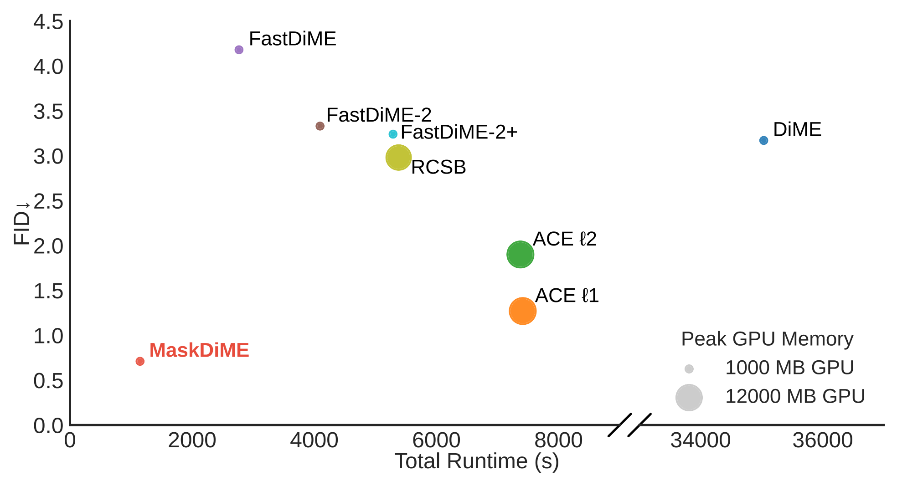
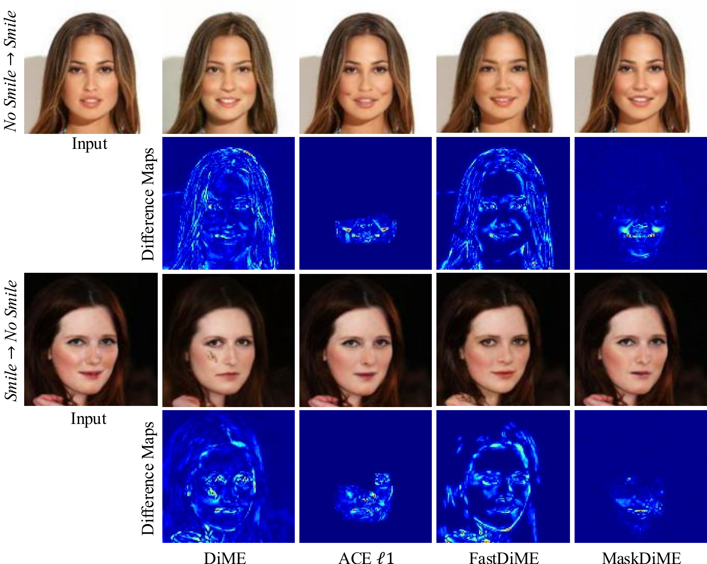
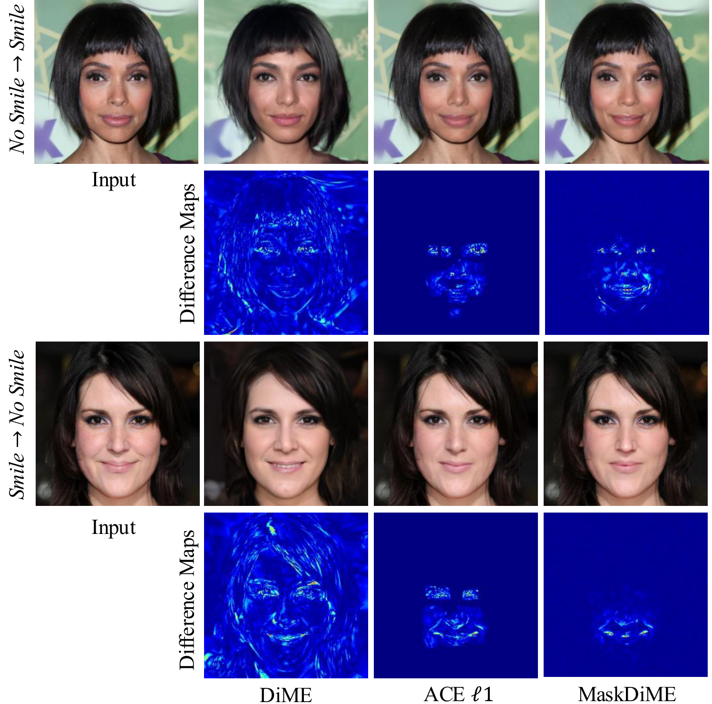
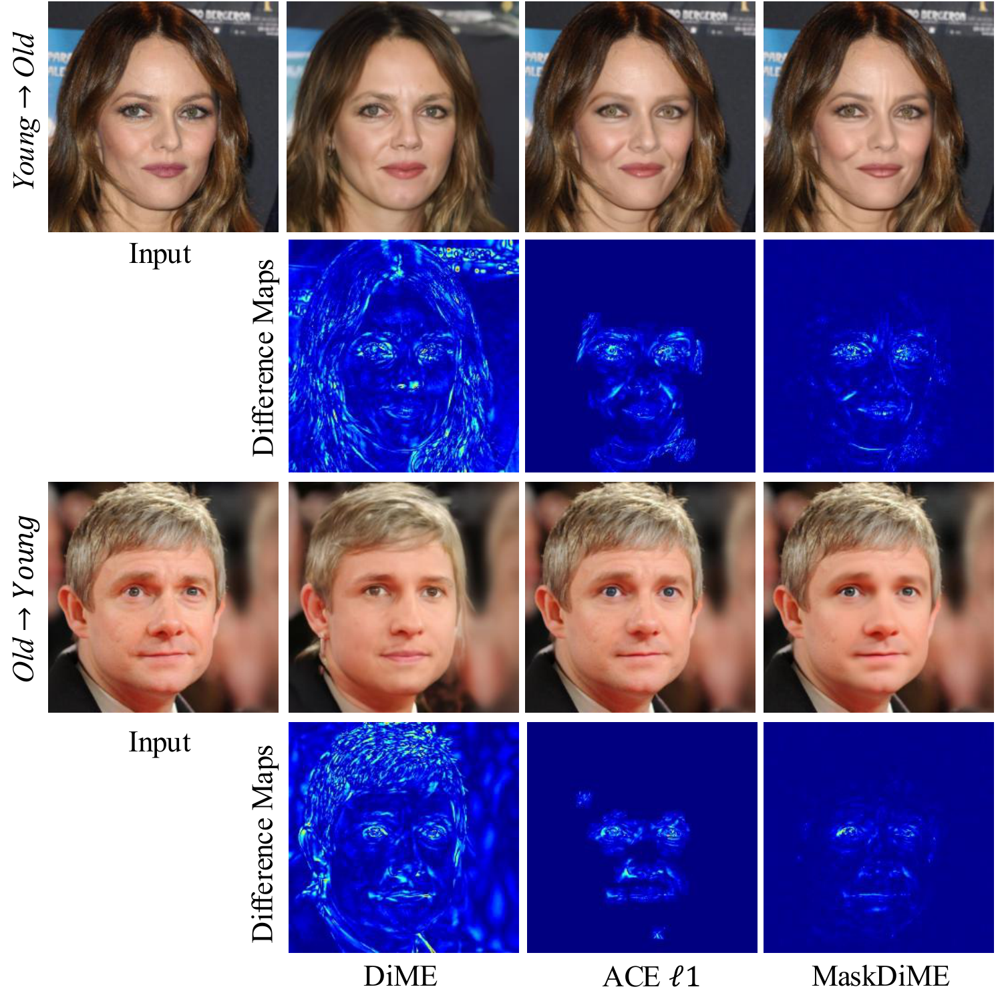
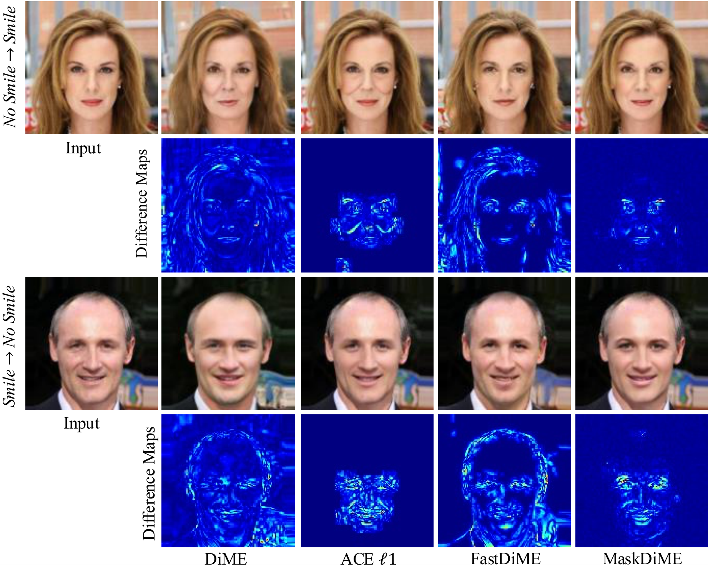
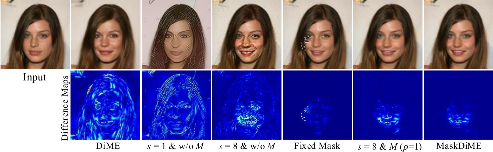
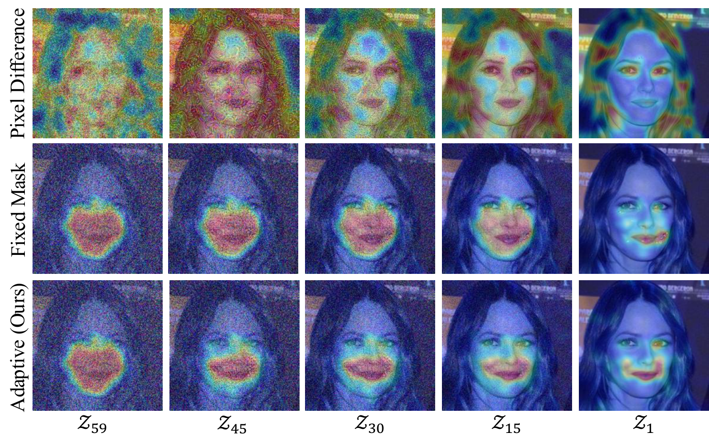

Efficiency
MaskDiME showcases remarkable speedups. Our training-free inference executes over 30x faster than competitive baselines while maintaining top-tier image fidelity.

Visual counterfactual explanations aim to reveal the minimal semantic modifications that can alter a model's prediction, providing causal and interpretable insights into deep neural networks.
However, existing diffusion-based counterfactual generation methods are often computationally expensive, slow to sample, and imprecise in localizing the modified regions. To address these limitations, we propose MaskDiME, a simple, fast, yet effective diffusion framework that unifies semantic consistency and spatial precision through localized sampling.
Our approach adaptively focuses on decision-relevant regions to achieve localized and semantically consistent counterfactual generation while preserving high image fidelity. Our training-free framework, MaskDiME, performs inference over 30x faster than the baseline and achieves comparable or state-of-the-art performance across five benchmark datasets spanning diverse visual domains, establishing a practical and generalizable solution for efficient counterfactual explanation.

Overview of our framework: Given an input image, MaskDiME first employs an attribution method to locate the decision-relevant regions, which are then used to generate a region-specific mask. We then perform a targeted diffusion generation process directed by semantic manipulations, yielding highly precise and realistic counterfactuals.





(Use the arrows to slide through various qualitative results across different datasets)
MaskDiME showcases remarkable speedups. Our training-free inference executes over 30x faster than competitive baselines while maintaining top-tier image fidelity.

We methodically validate each component of our adaptive masked diffusion framework. As demonstrated, gradient scaling and adaptive spatial masking strongly complement each other: the former controls classifier guidance strength, while the latter enforces precise, semantically coherent edits that preserve authentic image fidelity.

To validate the interaction between classifier guidance and diffusion dynamics, we visualize the evolution of noisy samples under different masking strategies. The per-timestep heatmaps (where red indicates stronger updates) show that our Adaptive Dual-mask adjusts its spatial focus at each diffusion step based on classifier gradients. This guides the model toward decision-relevant regions, producing spatially coherent counterfactual trajectories with fewer irrelevant perturbations.

@inproceedings{guo2026maskdime,
author = {Guo, Changlu and Christensen, Anders Nymark and Dahl, Anders Bjorholm and Hannemose, Morten Rieger},
title = {MaskDiME: Adaptive Masked Diffusion for Precise and Efficient Visual Counterfactual Explanations},
booktitle = {Proceedings of the IEEE/CVF Conference on Computer Vision and Pattern Recognition (CVPR)},
year = {2026},
}